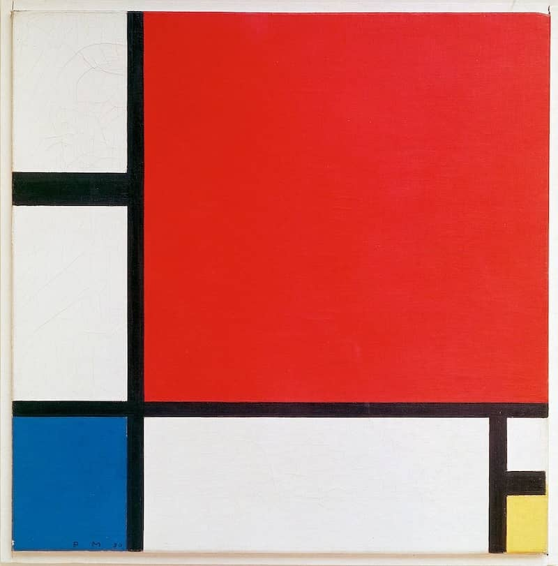

Piet Mondrian was a Dutch painter who was known for making boxy illustrations. His art was known to be abstract with it's multiple lines and colorful rectangles. His work was original in his time which made it so popular.
Back To Home Page